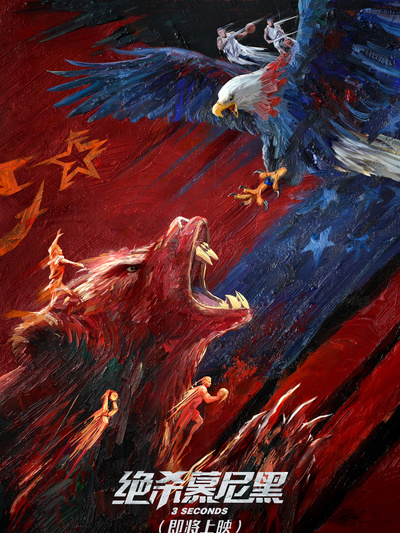

绝杀慕尼黑

主演：约翰·拉塞特|安德鲁·斯坦顿|彼特·道格特|李·昂克里奇|威尔·麦克马克|史黛芬妮·福尔松|C·S·安德森 主演: 汤姆·汉克斯|蒂姆·艾伦|安妮·波茨|托尼·海尔|科甘-迈克尔·凯
电影根据体育历史中著名的传奇真实事件改编，讲述了1972年慕尼黑奥运会篮球决赛中，前苏联篮球队打败了保持了36年全胜纪录的美国队的传奇故事。在决赛结束前三秒钟，美国队以一分优势领先。美国队已经开始提前庆祝比赛的胜利了，因为他们相信比赛结果已成定局。然而，一位来自苏联的不知名篮球教练，率领着艰难、困苦、贫穷中的苏联国家队，比赛结果发生逆转，整个篮球历史也发生了改变。